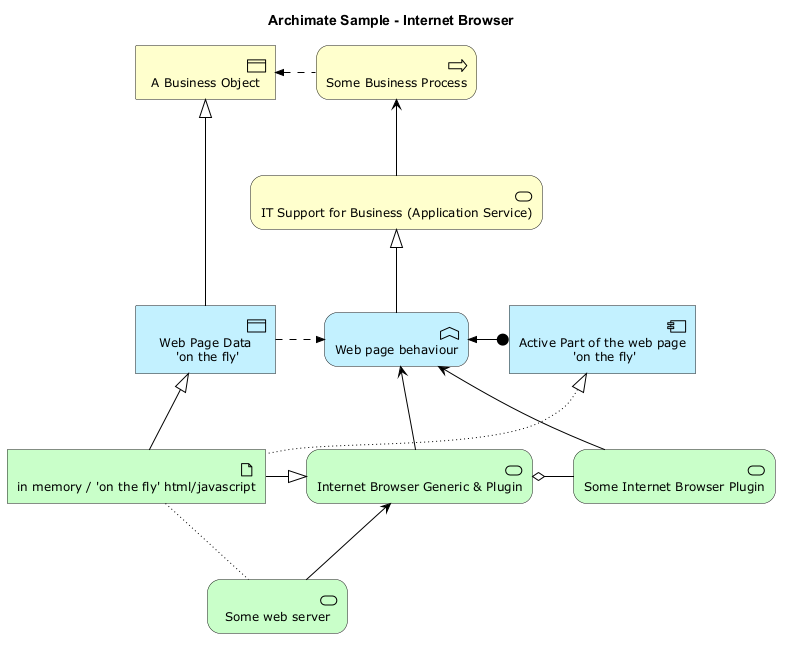

@startuml
!include <archimate/Archimate>
title Archimate Sample - Internet Browser
' Elements
Business_Object(businessObject, "A Business Object")
Business_Process(someBusinessProcess,"Some Business Process")
Business_Service(itSupportService, "IT Support for Business (Application Service)")
Application_DataObject(dataObject, "Web Page Data \n 'on the fly'")
Application_Function(webpageBehaviour, "Web page behaviour")
Application_Component(ActivePartWebPage, "Active Part of the web page \n 'on the fly'")
Technology_Artifact(inMemoryItem,"in memory / 'on the fly' html/javascript")
Technology_Service(internetBrowser, "Internet Browser Generic & Plugin")
Technology_Service(internetBrowserPlugin, "Some Internet Browser Plugin")
Technology_Service(webServer, "Some web server")
'Relationships
Rel_Flow_Left(someBusinessProcess, businessObject, "")
Rel_Serving_Up(itSupportService, someBusinessProcess, "")
Rel_Specialization_Up(webpageBehaviour, itSupportService, "")
Rel_Flow_Right(dataObject, webpageBehaviour, "")
Rel_Specialization_Up(dataObject, businessObject, "")
Rel_Assignment_Left(ActivePartWebPage, webpageBehaviour, "")
Rel_Specialization_Up(inMemoryItem, dataObject, "")
Rel_Realization_Up(inMemoryItem, ActivePartWebPage, "")
Rel_Specialization_Right(inMemoryItem,internetBrowser, "")
Rel_Serving_Up(internetBrowser, webpageBehaviour, "")
Rel_Serving_Up(internetBrowserPlugin, webpageBehaviour, "")
Rel_Aggregation_Right(internetBrowser, internetBrowserPlugin, "")
Rel_Access_Up(webServer, inMemoryItem, "")
Rel_Serving_Up(webServer, internetBrowser, "")
@enduml